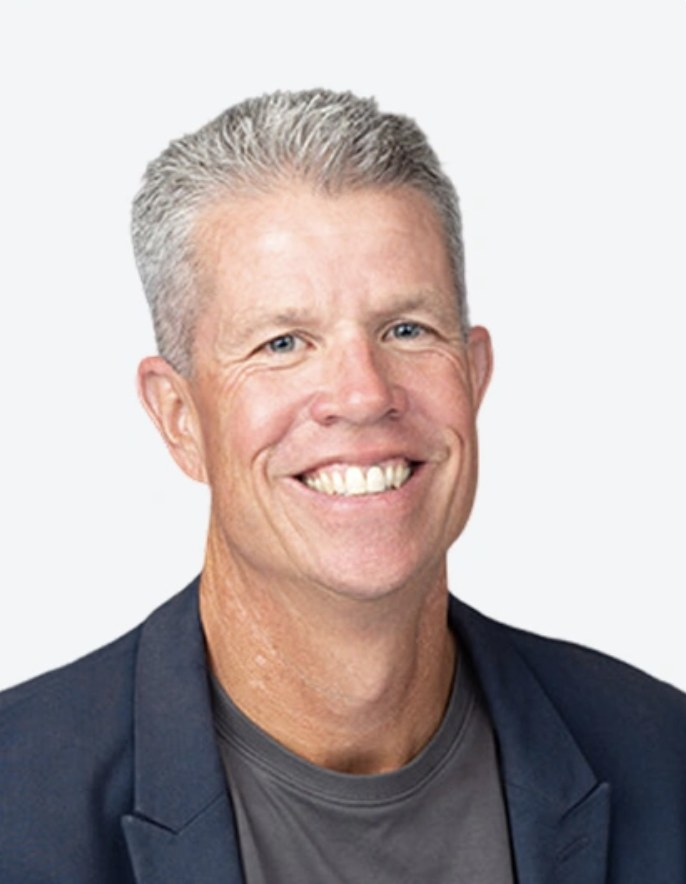
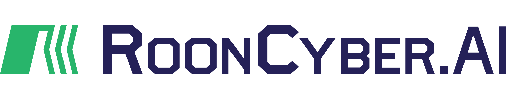
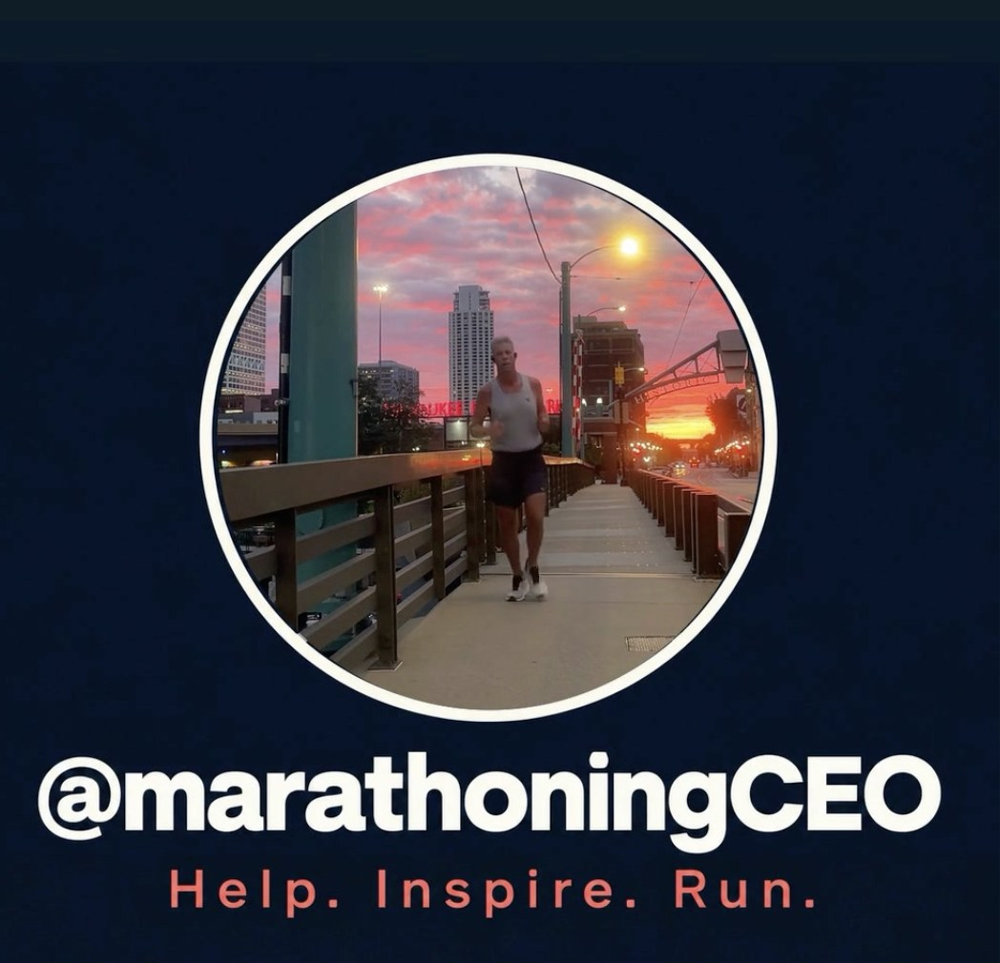

Three decades in security, from storage to SaaS to the runtime layer that AI now needs. Today I lead RoonCyber.AI, and I am working my way to 100 marathons.


Companies have AI governance policies on paper. Some have gateways. Millions of tokens still flow through channels nobody is watching, with no runtime enforcement. That gap is where the risk lives, and it is what RoonCyber.AI closes.
We use eBPF to see what is actually running at the kernel level, in real time, with no agents, no code changes and no downtime. Most tools show you what should be running. We show you what is.

I have been posting as MarathoningCEO for about a year, mixing race days, training, leadership lessons and a weekly AI tip. It has grown to more than 330 videos and over 2 million views across platforms.
The next milestone I am chasing is a first sub 3:15 marathon, at 57.
The fastest way to reach me is LinkedIn. If you are a CISO trying to govern what AI is really doing in production, I would like to hear what you are seeing.